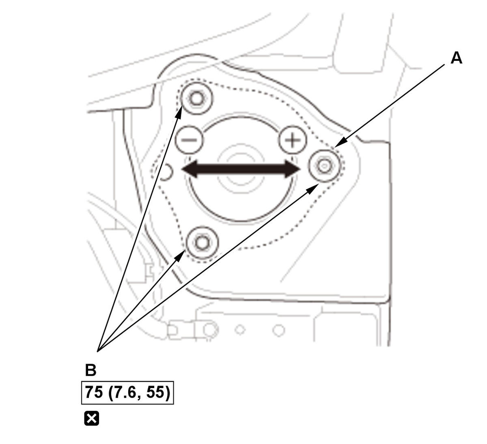
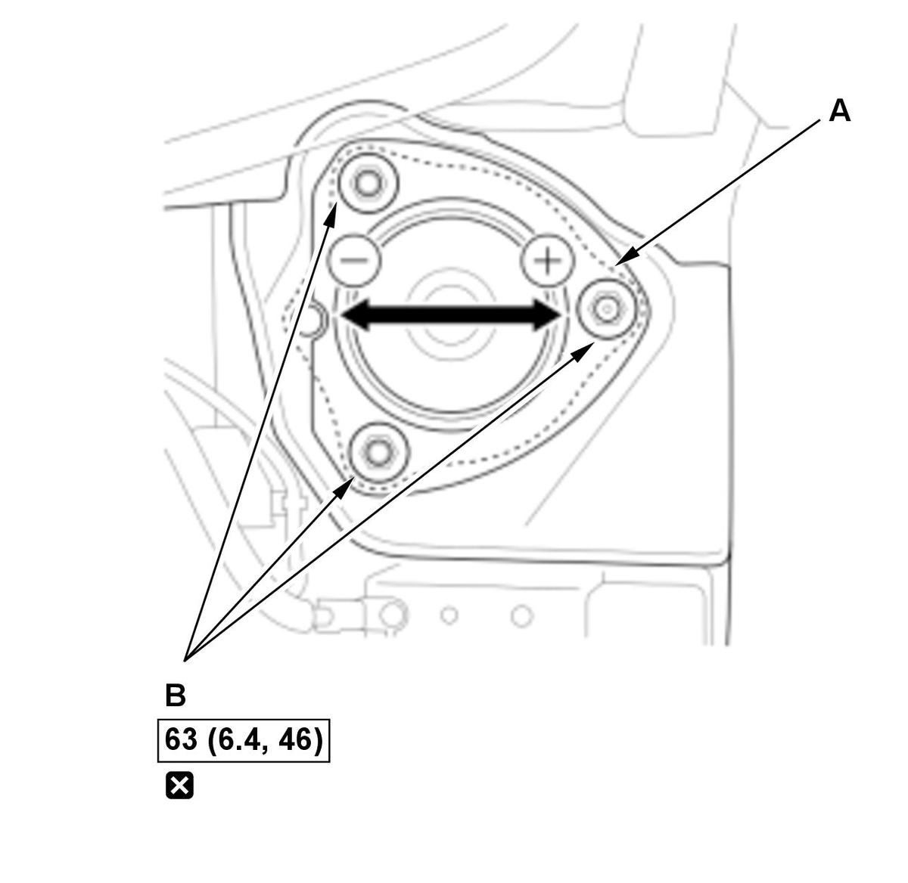
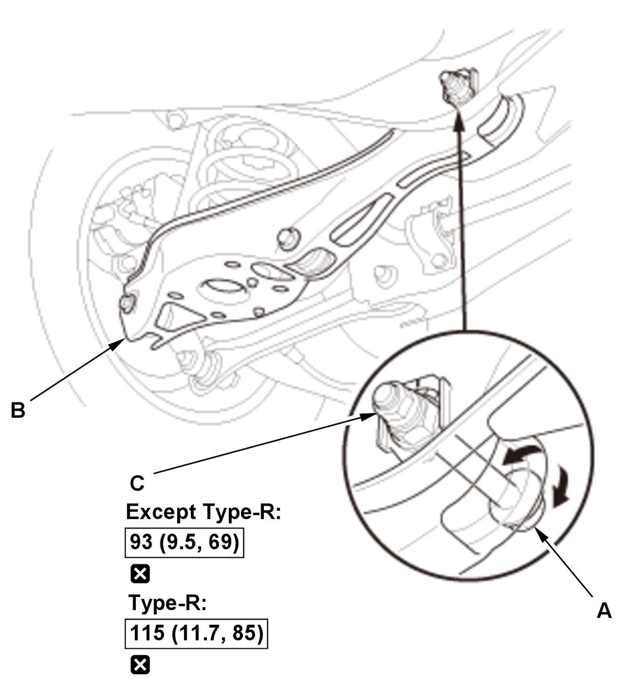
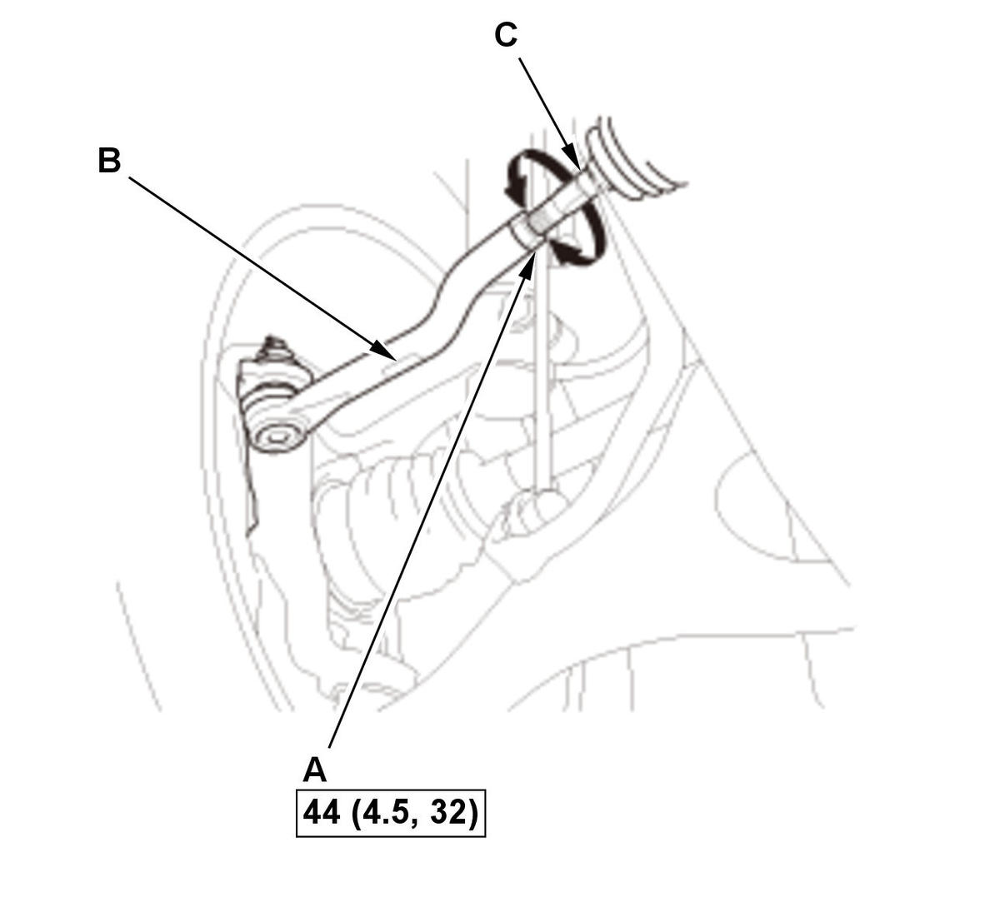

Wheel Alignment: Adjustment
The suspension can be adjusted for front camber, front toe, and rear toe. However, each of these adjustments are related to each other. For example, when you adjust camber, the toe will change.
NOTE:
- How to read the torque specifications .
- After adjusting the wheel alignment, do the VSA sensor neutral position memorization.
- Vehicle - Lift
- Front Camber - Adjust (2/4-Door)
Screw guide pin type Hex guide pin type
1. Replace the flange nuts (A) with new ones, and lightly tighten them. 2. If the guide pin (B) is equipped, remove it by doing the following.
NOTE: The guide pin is for factory assembly use only and can be discarded after removal.
- Screw guide pin type
Install a suitable nut (C) with 2-3 suitable washers (D) to the guide pin, then tighten the nut until the guide pin comes off.
- Hex guide pin type
Use a wrench (E) to rock the guide pin left and right while pulling it out from the damper mounting base (F).

Courtesy of HONDA, U.S.A., INC.3. Adjust the camber angle by moving the upper part of the damper (A).
NOTE: The camber angle can be adjusted ± 19 '.4. Tighten the flange nuts (B) to the specified torque.
5. Lower the vehicle to the ground, and bounce the front of the vehicle up and down several times to stabilize the suspension.
6. Measure the camber angle. If the camber angle is not within specification, readjust the camber angle. If the camber measurement is correct, measure toe-in, and adjust it if necessary.
7. Install the hole seal (A) after the guide pin is removed.
NOTE: Refer to the Parts Catalog for the hole seal. - Screw guide pin type
- Front Camber - Adjust (5-Door)
1. Replace the flange nuts (A) with new ones, and lightly tighten them. 2. If the guide pin (B) is equipped, remove it by doing the following.
-1. Remove the damper plate (C).
-2. Install a suitable nut (D) with 2-3 suitable washers (E) to the guide pin, then tighten the nut until the guide pin comes off.
NOTE: The guide pin is for factory assembly use only and can be discarded after removal.
-3. Install the hole seal (F) after the guide pin is removed.
NOTE: Refer to the Parts Catalog for the hole seal.
-4. Install the damper plate.

Courtesy of HONDA, U.S.A., INC.3. Adjust the camber angle by moving the upper part of the damper (A).
NOTE: The camber angle can be adjusted ± 19 '.4. Tighten the flange nuts (B) to the specified torque.
5. Lower the vehicle to the ground, and bounce the front of the vehicle up and down several times to stabilize the suspension.
6. Measure the camber angle. If the camber angle is not within specification, readjust the camber angle. If the camber measurement is correct, measure toe-in, and adjust it if necessary.
- Rear Toe - Adjust

Courtesy of HONDA, U.S.A., INC.NOTE: Do the rear toe adjustment before the front toe adjustment. 1. Hold the adjusting bolt (A) on lower arm B, and remove the self-locking nut (C).
2. Replace the self-locking nut with a new one, and lightly tighten it.
NOTE:
- Always use a new self-locking nut whenever it has been loosened.
- Reassemble the adjusting bolt and the adjusting cam plate with the eccentric facing up.
3. Adjust the rear toe by turning the adjusting bolt until the toe is correct.
4. Tighten the self-locking nut to the specified torque while holding the adjusting bolt.
- Front Toe - Adjust

Courtesy of HONDA, U.S.A., INC.NOTE: Do the rear toe adjustment before the front toe adjustment. 1. Loosen the tie-rod end locknuts (A) while holding the flat surface sections (B) of the tie-rod end with a wrench, and turn both tie-rods (C) until the front toe is within specifications.
2. After adjusting, tighten the tie-rod end locknuts to the specified torque. Reposition the rack-end boot if it is twisted or displaced.
- VSA Sensor Neutral Position - Memorize